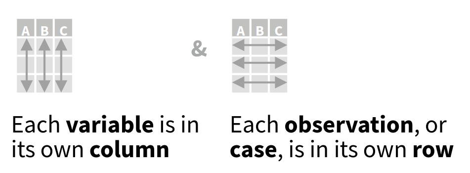
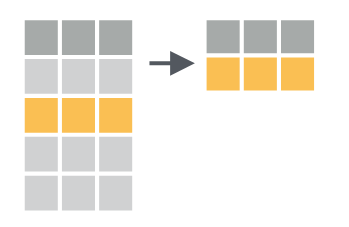
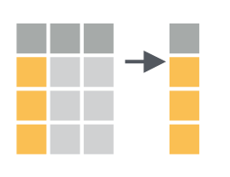
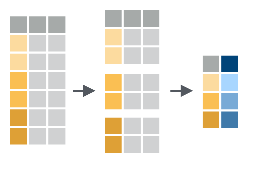

project/
├─ your_project.Rproj
├─ vignettes/
│ ├─ your_dynamic_document.Rmd
├─ data/
│ ├─ some_data.csv
├─ R/
│ ├─ R_scripts.R1 Crash course R
This chapter will briefly summarize some of the principles which will be used throughout the book. In particular, I outline some of the best practices in managing projects and the basic data manipulations using the tidy data principles. For a thourough introduction to data science in R I refer to R for data science by Hadley & Grolemund, while open data science practices and reproducible project management I refer to Reproducibility with R by Campitelli & Corrales. For an in depth discussion of geocomputational concepts I refer to Geocomputation with R by Lovelace, Nowosad, Muenchow.
1.1 Project management
From a very practical and pragmatic point of view a solid workflow requires reproducible results. The smallest unit in a reproducible workflow is the structure of your personal research project (irrespective of its contributions to a larger whole). Structuring a research project.
Structuring your project covers:
- the organization of your files (i.e. code, data, manuscripts)
- file naming conventions (how things are named)
- code documentation (describing what and how you do things)
- data documentation (describing data sources)
- version control (logging progress systematically)
When using R the easiest solution to many of these issues is to use an Integrated Development Environment (IDE, e.g. RStudio or VS Code), version control to track code changes such as git and its cloud based collaborative components such as Github or Codeberg. The setup of both IDEs is described in Appendix A.
It is recommended to start a new project in the RStudio IDE and provide a consistent structure grouping similar objects in folders, e.g. storing data in a data folder, your R scripts in the R folder etc. You can further select the tracking of used packages using renv when creating a new project.
For those familiar with github I provide a Github template which you can use when creating a new project on Github. This provides a populated project structure and removes the overhead of making decisions on how to structure a project.
Note
Pay close attention to the setup of your project as an intuitive and consistent structure greatly enhances your productivity, reproducibility, replicability within a different context, and the overall quality of your work. First and foremost, your project structure, the documentation you write, and the clarity of your work, are notes to your future self. Be kind to your future self!
1.2 Basic R
Unlike many other frameworks for geocomputation, and in particular graphical geographic information system (GIS) such as ArcGIS and QGIS, geocomputation in R is uniquely code oriented. Some basic knowledge of data types, code structure and execution is therefore required. Below I give a very very short introduction to the most basic principles. For an in depth discussion on all these aspects I refer to the resources mentioned at the top of this section.
1.2.1 Data types
Within R common data structures are vectors, list objects and data frames and tibbles, which are defined as such:
# A numeric vector
v <- c(1,4,5,6)
# A named list
l <- list(
element_a = "a",
number_2 = 2
)
# A data frame (or structured named lists)
df <- data.frame(
numbers = c(1,3,2),
letters = c("a", "b","c")
)Note that in R variables are assigned using the <- (left arrow), however you can use = as well (which is more in line with for example python). Once assigned these elements are available for recall (from memory) an can be used for computation, or other operations. For example we can print the list using:
print(l)$element_a
[1] "a"
$number_2
[1] 2Data frames in this context represent tabulated data where the content can vary by column.
print(df) numbers letters
1 1 a
2 3 b
3 2 c1.2.2 Sub-setting and type conversions
You can access data in the above data types by referring to them by index, or in some cases by name. For example, accessing the 2th element in vector v can be accomplished by using v[2]. Element ‘a’ in list l can be accessed using:
v[2][1] 4Named list or data frame elements can be accessed using their respective names and the dollar sign ($) notation using the following syntax variable + $ + element or column, e.g. :
# access a named list element
l$number_2[1] 2# access a data frame column
df$letters[1] "a" "b" "c"1.2.3 Basic math & operations
All variables are available for mathematical operations using built in functions or basic mathematical operators (+, -, *, /):
# multiplying/dividing the number vector n
v * 2[1] 2 8 10 12# dividing the number vector n
v / 2[1] 0.5 2.0 2.5 3.0# adding a value to number vector n
v + 2[1] 3 6 7 8# subtracting a value to number vector n
v - 2[1] -1 2 3 4Note that these operations are applied to all elements of a vector (or column of a dataframe) when called without specifying a particular subset. This sweeping computation of a whole set of data is called vectorization and can be used to greatly increase computational speed by limiting the need to loop over individual variables explicitly.
R comes with a large library of functions. A function is a pre-assigned operation which is executed on the desired variable. An example of which is the cumsum() function which calculates the cumulative sum of consecutive elements in a vector / data frame column.
# calculating a cummulative sum of number vector n
cumsum(v)[1] 1 5 10 161.2.4 Functions (custom)
In addition to the included functions you can write your own functions in R. This allows you to automate certain routine operations particular to your project / setting.
For example, one can define a small function which reports back the last element of a vector:
# defines a function printing
# the last element of a vector
last <- function(x) {
x[length(x)]
}Executing this on our vector v, will show the following result:
# apply the defined function
last(v)[1] 6Be mindful of the breath of included functions in R or currently available packages. For example, within the dplyr package, which provides common data manipulation functionality, there is a function called last(). For the use of libraries see Section 1.3.
1.2.5 Reading data
In the above examples I have shown only simple examples relying on internal data. However, different functions exist to read external data into R. The most basic function to read human readable (text) data into R is read.table(). Below I use a combination of write.table() and read.table() to demonstrate how to write human readable (text) data to file, and read the data back in.
# create a data frame with demo data
df_original <- data.frame(
col_1 = c("a", "b", "c"),
col_2 = c("d", "e", "f"),
col_3 = c(1,2,3)
)
# write table as CSV to disk
write.table(
x = df_original,
file = file.path(tempdir(), "your_file.csv"),
sep = ",",
row.names = FALSE
)
# Read a CSV file
df <- read.table(
file.path(tempdir(), "your_file.csv"),
header = TRUE,
sep = ",",
stringsAsFactors = FALSE
)All digital data which is not represented as text characters can be considered binary data. One of the advantages of binary data is that it is an efficient representation of data, saving space. This comes at the cost of requiring a dedicated software (i.e. libraries), other than a text editor, to manipulate the data.
In geography and environmental sciences particular (geospatial) file formats dominate the field. Some of these file formats relate to the content of the data, some of these formats are legacy formats due to the history of the field itself. Below you find a list some of the most common formats you will encounter. For the use of (geo-spatial) libraries I refer to Section 1.3 and Chapter 3 .
| File format (extension) | Format description | Use case | R Library |
|---|---|---|---|
| *.csv | comma separated tabular data | General purpose flat files with row and column oriented data | base R |
| *.txt | tabular data with various delimiters | General purpose flat files with row and column oriented data | base R |
| *.json | structured human-readable data | General purpose data format. Often used in web application. Has geospatial extensions (geojson). | jsonlite |
| *.nc | NetCDF data array data | Array-oriented data (matrices with > 2 dimensions). Commonly used to store climate data or model outputs. Alternative to HDF data. | ncdf4, terra, raster |
| *.hdf | HDF array data | Array-oriented data (matrices with > 2 dimensions). Commonly used to store Earth observation data. | hdf |
| *.tiff, *.geotiff | Geotiff multi-dimensional raster data (see below) | Layered (3D) raster (image) data. Commonly used to represent spatial (raster) data. | terra, raster |
| *.shp | Shapefile of vector data (see below) | Common vector based geospatial data. Used to describe data which can be captured by location/shape and attribute values. | sp, sf |
1.3 Libraries / packages
Not all software components are included in a basic R installation. Additional components can be installed as libraries or packages from official R archives (CRAN), or github (see below). A full list of packages used in the rendering of the book and its examples can be found in Appendix C, where information on the automated installation of all required packages is provided in Appendix A.
For example, we can extend the capabilities of base R by installing the dplyr package from the official CRAN archive using: install.pacakges("dplyr"). dplyr provides a set of functions to facilitate common data manipulation challenges covered in Section 1.4. After a successful installation you can load packages using the library() function, as library("dplyr"). Functions as defined within dplyr can then be accessed in scripts or from the command line.
# load the library
library(dplyr)
# show the first element of the vector
first(v)[1] 1At times it can be useful to use the :: notation in calling package functions. The :: notation allows you to call a function without loading the full package using library(). This can be done useful if you only need one particular function, and don’t want to load the whole package (as this might have memory/performance implications). Furthermore, the use of :: makes it explicit what the source package of a particular function is. This can be helpful if packages have functions with the same name, leading to confusion on the source of the function used.
# show the last element of the vector v
# using the dplyr version of "last"
# calling the function explicitly
# avoiding confusion with our own
# last() function
dplyr::last(v)[1] 6External packages (non CRAN)
For installs from external sources we need the remotes package. Installing a package directly from a Github location would then be possible using for example:
remotes::install_github("tidyverse/dplyr")This command loads the latest development version of dplyr from its Github location.
Warning
Note that packages on Github or elsewhere are note reviewed, and might pose security risks to your system.
1.4 Tidy data
Throughout the book I will structure data using a tidy data approach. Tidy data is a way of structuring data where every row represents a single sample and every row represents a single variable. The tidy data format is a long row orientated format. In short, in tidy data:
- every column is a variable
- every row is an observation
- every cell is a single value

This format allows for easier grouped operations. As visually illustrated below, filtering data by observation properties is easier when data is rowwise oriented (Figure 1.2).

Note
Any other configuration is considered “messy data”, but therefore not invalid or “bad”. Certain messy data formats might be more memory efficient.
1.4.1 Tidy data conversions
Although both long or wide data formats have their advantages and drawbacks, the use of long (row oriented) data allows us to use the dplyr library to iterate over data quickly and transparently (see Figure 1.2). However, large amounts of data are provided as “messy data” which is not rowwise oriented. An understanding of conversions from a wide to a long data format are therefore critical throughout this manual.
To convert the below “messy” data frame listing “cases” by year for three countries to a long format you can use the pivot_longer() function from the tidyr library. The tidyr library contains a set of tools for the conversion to and cleaning of data into a tidy (not messy) data format.
# demo data frame with "cases" for
# three countries, where the cases
# are listed by year in a columnn by
# column basis
df <- data.frame(
country = c("CH","BE","FR"),
year_2000 = c(200, 40, 1340),
year_2001 = c(21, 56, 5940)
)
head(df) country year_2000 year_2001
1 CH 200 21
2 BE 40 56
3 FR 1340 5940The conversion of the data looks like this, ordering the data with the yearly columns ordered in a single “year” column, the containig data in a column called “cases”. Values are taken from columns (cols) which start with “year”. Alternatively you could provide and vector with column names or column indices.
tidy_df <- tidyr::pivot_longer(
df,
cols = starts_with("year"),
names_to = "year",
values_to = "cases"
)
head(tidy_df)# A tibble: 6 × 3
country year cases
<chr> <chr> <dbl>
1 CH year_2000 200
2 CH year_2001 21
3 BE year_2000 40
4 BE year_2001 56
5 FR year_2000 1340
6 FR year_2001 59401.4.2 Tidy data manipulations
Piping data
When using dplyr and tidyr libraries we can make use of the pipe concept. A pipe is a way to forward the output of one function to the input of the next, stringing together an analysis as you would read a sentence. Throughout this manuscript the native pipe (|>) is used. Rewriting the previous pivot_longer() operation would yield:
tidy_df <- df |>
tidyr::pivot_longer(
cols = starts_with("year"),
names_to = "year",
values_to = "cases"
)
head(tidy_df)# A tibble: 6 × 3
country year cases
<chr> <chr> <dbl>
1 CH year_2000 200
2 CH year_2001 21
3 BE year_2000 40
4 BE year_2001 56
5 FR year_2000 1340
6 FR year_2001 5940Here the data frame df has it’s output forwarded (|>) to the function pivot_longer(), which will process the data according to the parameters specified. Note that the data frame is not explicitly called by the pivot_longer() function itself.
Filtering data
Tidy data is especially convenient when filtering and selecting data. When filtering data you apply criteria rowwise using the dplyr::filter() function. For example we can filter out data based upon “year” or “cases” in our tidy_df.
# filter data for year_2000
# with more than 50 cases
tidy_df |>
dplyr::filter(
year == "year_2000",
cases > 50
) |>
print()# A tibble: 2 × 3
country year cases
<chr> <chr> <dbl>
1 CH year_2000 200
2 FR year_2000 1340Filtering thus reduces the number of rows in your dataset. This can be visually represented as such (Figure 1.3).
Selecting data
Selecting data operates on columns instead of rows. You can select columns using the dplyr::select() function. For example, when selecting only the country code and cases counted:
# only retain the country code
# and case numbers
tidy_df |>
dplyr::select(
country,
cases
) |>
print()# A tibble: 6 × 2
country cases
<chr> <dbl>
1 CH 200
2 CH 21
3 BE 40
4 BE 56
5 FR 1340
6 FR 5940The output therefore has the same number of rows, but only outputs the selected columns.

Mutate & summarize
The tidy logic allows for easy conversions or reduction of column data using the dplyr::mutate() and dplyr::summarize() functions respectively. For example we can double the case count values using:
tidy_df |>
dplyr::mutate(
caces_2x = cases * 2
) |>
head()# A tibble: 6 × 4
country year cases caces_2x
<chr> <chr> <dbl> <dbl>
1 CH year_2000 200 400
2 CH year_2001 21 42
3 BE year_2000 40 80
4 BE year_2001 56 112
5 FR year_2000 1340 2680
6 FR year_2001 5940 11880Similarly we can calculate the mean case count across all the available data as:
tidy_df |>
dplyr::summarize(
mean_cases = mean(cases)
) |>
head()# A tibble: 1 × 1
mean_cases
<dbl>
1 1266.Grouped operations
Finally, we can apply the dplyr::mutate() and dplyr::summarize() functions across groups, defined by an index, using the dplyr::group_by() function. For example we can calculate the mean case count per year as follows:
tidy_df |>
group_by(year) |>
dplyr::summarize(
mean_cases = mean(cases)
) |>
head()# A tibble: 2 × 2
year mean_cases
<chr> <dbl>
1 year_2000 527.
2 year_2001 2006.
Grouped operations using dplyr::mutate() and dplyr::summarize() and other functions highlighted cover a substantial fraction of day-to-day data wrangling.
1.5 Reporting using R markdown
R markdown is a dynamic notebook format which allows you to mix written text (reporting) and code results. Often notebooks are used for demonstration purposes, showing the code used alternating with full text descriptions. For those familiar.
A new R markdown file can be created using RStudio menu item:
File > New File > R markdown
The default settings will create an html output file. You can specify all other settings.

1.5.1 Writing and coding
All markdown files have a header which specifies the output format (html if following the above instructions).

You can write text using markdown formatting, and executable code which should be contained within code chunks, starting with “```{r}” in the above image (Figure 1.7). These code chunk/block can be executed using the green “play” button on the right hand side of the code block. This will let you incrementally step through a workflow (with both documentation, and code).
Note
You can use the here package to make references to paths consistent within an R project. When wrapping a path with here::here() you reference the file relative to the main project directory, not the current directory. This is especially helpful when using R markdown or other notebook formats such as Quarto. These notebooks render code relative to their current location (path). Notebooks in sub-directories in a project will therefore not be able to easily access data in other sub-directories. The here package resolves this issue.
1.5.2 Rendering a project
The full document can be rendered as an html file (a self-contained web page), by pushing the “knitr” or “render” button at the top of the editor panel. Running all code like this requires that all necesasry data, external code and or packages are loaded.
When using online data resources, such as APIs (see Section 2.2.2), it might be useful to buffer and load the data locally (while disabling the execution of the commands to get the data in the final render, the latter can be done by specifying “```{r eval = FALSE}” at the top of a code block).